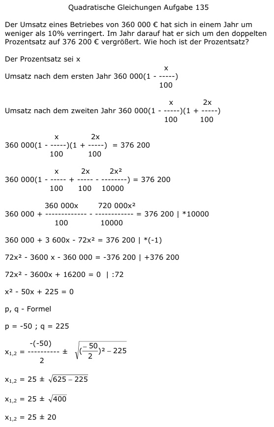

Aufgabe 135 Der Umsatz eines Betriebes von 360 000 € hat sich in einem Jahr um weniger als 10% verringert. Im Jahr darauf hat er sich um den doppelten Prozentsatz auf 376 200 € vergrößert. Wie hoch ist der Prozentsatz? Der Prozentsatz sei x x Umsatz nach dem ersten Jahr 360 000(1 - -----) 100 Umsatz nach dem zweiten Jahr x 2x 360 000(1 - -----)(1 + -----) 100 100 x 2x 360 000(1 - -----)(1 + -----) = 376 200 100 100 x 2x 2x2 360 000(1 - ----- + ----- - --------) = 376 200 100 100 10000 360 000x 720 000x2 360 000 + ---------- - ---------- = 376200 |*10000 100 10000 360 000 + 3 600x - 72x2 = 376 200 |*(-1) 72x2 - 3600 x - 360 000 = -376 200 |+376 200 72x2 - 3600x + 16200 = 0 | :72 x2 - 50x + 225 = 0 p, q - Formel p = -50 ; q = 225  x1,2 = 25 ± 20 x1 = 25 + 20 = 45 keine Lösung, Prozentsatz größer als 10%. x2 = 25 - 20 = 5 %